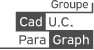

Présentation générale
Je m'appelle Thibault TROFLEAU, j'ai 26 ans et je suis actuellement ingénieur d'étude génie civil. Depuis récemment, je m'interesse au développement web. Vous trouverez donc ici mes premiers tests. Vous pourrez me contacter par le formulaire en bas de page lorsque celui-ci sera créé.
 Ingénieur d'études, Ikos GROUP - CDI
Ingénieur d'études, Ikos GROUP - CDI - Janv. 2021 - aujourd'hui
Lyon, Auvergnes-Rhônes-Alpes -  BIM Modeleur, Goupe CAD UC Para Graph - CDD
- Dec. 2020 - Dec. 2020
Paris, Ile de France - Technicien méthodes, Groupe JORYF - Alternance
- Sept 2017 - Sept. 2020
Brétigny sur Orge, Ile de France
Experiences professionnelles
- Master IN2C, INSA Hauts de France
- Sep. 2018 - Sept. 2020
Valenciennes, Hauts de France  Licence profesionnelle Génie Civil, IUT du Havre
Licence profesionnelle Génie Civil, IUT du Havre- Sept. 2017 - Sept. 2018
Le Havre, Normandie - Brevet de techicien supérieur du Batiment, Lycée Jean-Pierre TIMBAUD
- Sept. 2015 - Sept. 2017
Brétigny sur Orge, Ile de France